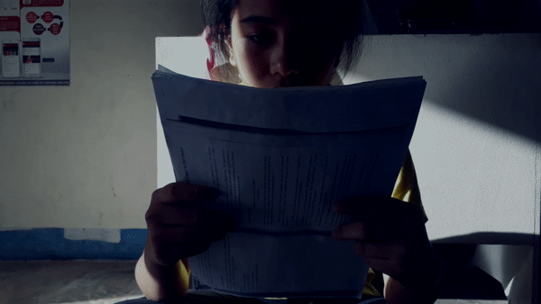
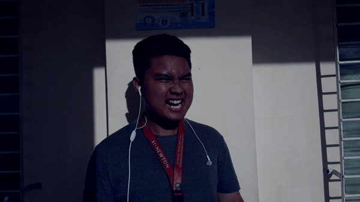
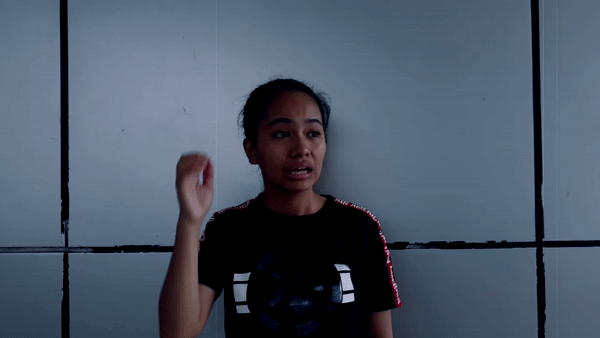

|
There are some mental illnesses and/or disorders you get to encounter almost often, but are usually disregarded.
Here are some examples . . .
|
|
GENERALIZED ANXIETY DISORDER
Generalized anxiety disorder (GAD) is more than the normal anxiety people experience day to day.
It’s chronic and exaggerated worry and tension, even though nothing seems to provoke it. Having
this disorder means always anticipating disaster, often worrying excessively about health, money,
family, or work. Sometimes, though, the source of the worry is hard to pinpoint. Simply the thought
of getting through the day provokes anxiety (Grohol, 2019).
See More.
|
|

|
DEPRESSION
Clinical depression goes by many names, such as “the blues,” biological or clinical depression,
and a major depressive episode. But all of these names refer to the same thing: feeling sad and
depressed for weeks or months on end — not just a passing blue mood of a day or two. This feeling
is most often accompanied by a sense of hopelessness, a lack of energy (or feeling “weighed down”),
and taking little or no pleasure in things that once gave a person joy in the past (Grohol, 2019).
See More.
|
|

|
SUPERIORITY COMPLEX
Those exhibiting the superiority complex have a self-image of supremacy. Those with superiority
complexes may garner a negative image in those around them, as they are not concerned with the opinions
of others about themselves. Superiority complex sufferers do not always care about image or vanity, since
they have innate feelings of superiority and thus do not usually concern themselves with proving their
superiority to others. The term "superiority complex", in everyday usage, refers to an overly high opinion
of oneself. In psychology, it refers not to a belief, but a pattern of behaviors expressing the belief
that one is superior.
|
|

|
STUTTERING
At the onset of stuttering, the speaker may not be aware of the problem, although awareness and even fearful
anticipation of the problem may develop later. The speaker may attempt to avoid stuttering by linguistic mechanisms
(e.g., altering the rate of speech, avoiding certain speech situations such as telephoning or public speaking, or
avoiding certain words or sounds). Stuttering may be accompanied by motor movements (e.g., eye blinks, tics, tremors
of the lips or face, jerking of the head, breathing movements, or fist clenching) (Grohol, 2019).
See More.
|

|
SELECTIVE MUTISM
Selective mutism is a type of anxiety disorder whose main distinguishing characteristic is the persistent failure to
speak in specific social situations (e.g., at school or with playmates) where speaking is expected, despite speaking
in other situations. Selective mutism should not be diagnosed if the individual’s failure to speak is due solely to a
lack of knowledge of, or comfort with, the spoken language required in the social situation. It is also not diagnosed
if the disturbance is accounted for by embarrassment related to having a communication disorder (e.g., stuttering) or
if it occurs exclusively during a pervasive developmental disorder, schizophrenia, or other psychotic disorder
(Grohol, 2019).
See More.
|

|
INFERIORITY COMPLEX
An inferiority complex consists of lack of self-esteem, a doubt and uncertainty about oneself, and feelings of not
measuring up to standards. It is often subconscious, and is thought to drive afflicted individuals to overcompensate,
resulting either in spectacular achievement or extremely asocial behavior. An inferiority complex occurs when the feelings
of inferiority are intensified in the individual through discouragement or failure. Those who are at risk for developing a
complex include people who: show signs of low self-esteem or self-worth, have low socioeconomic status, or have a history
of depression symptoms.
|
|